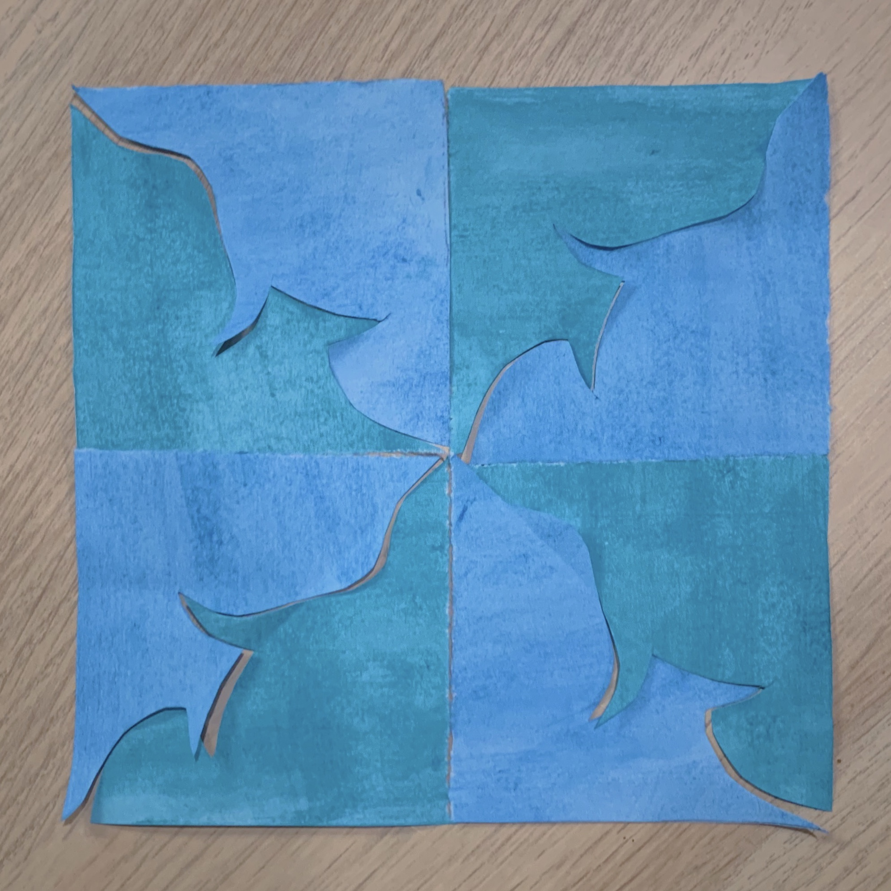
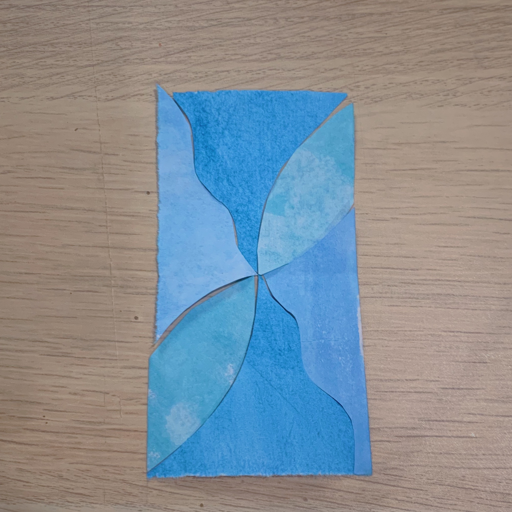
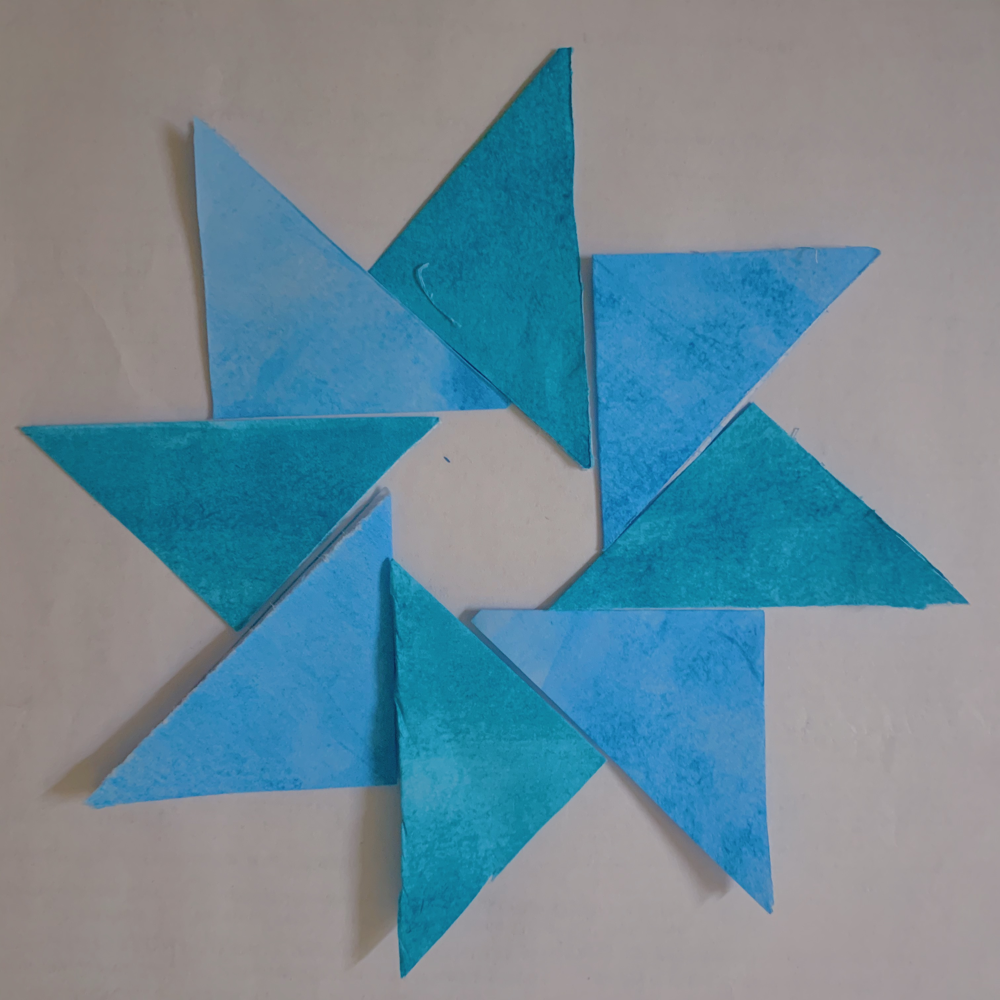
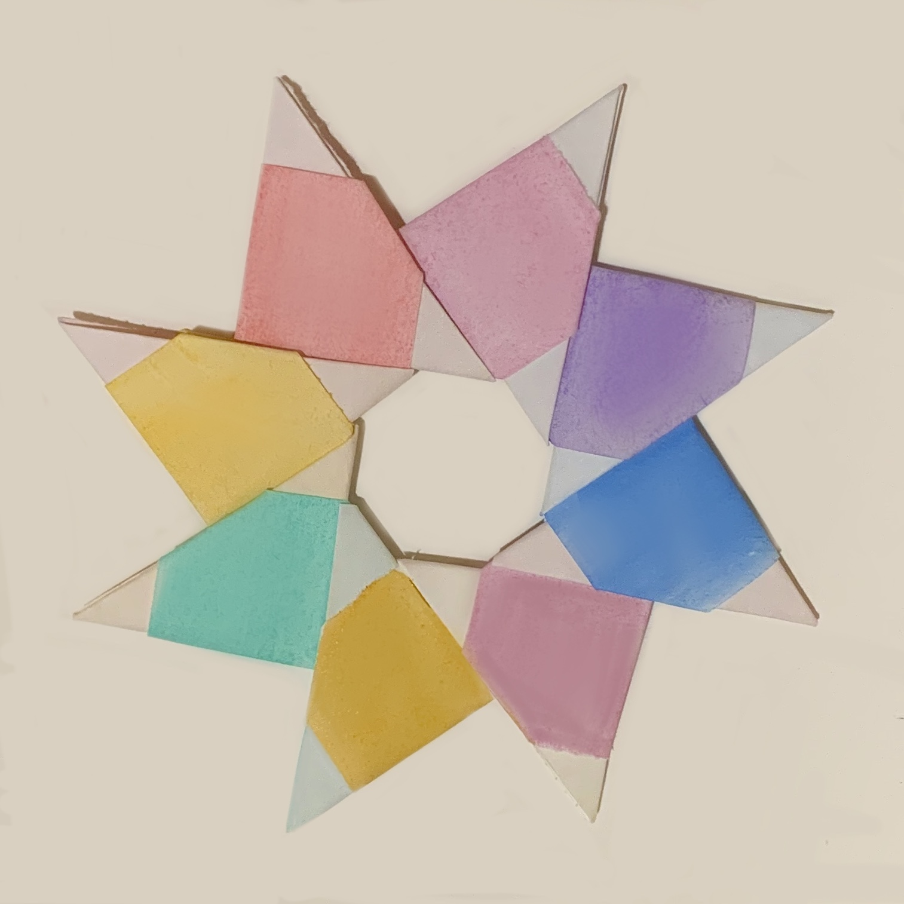
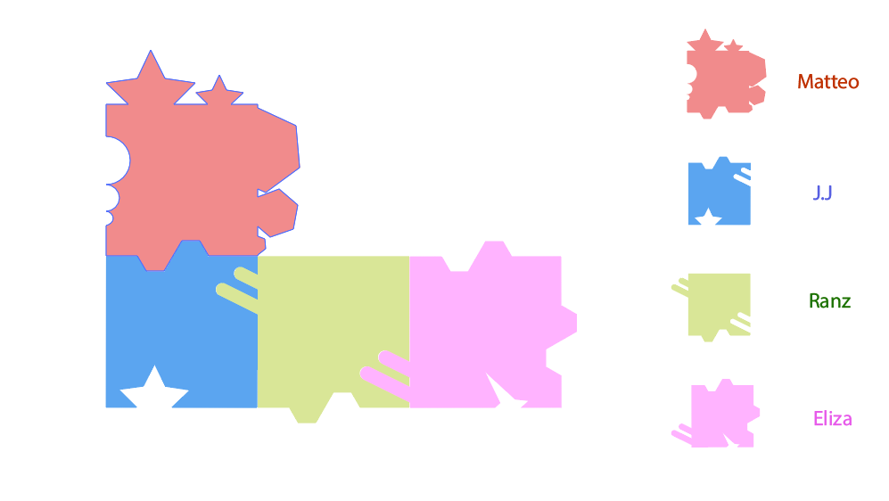
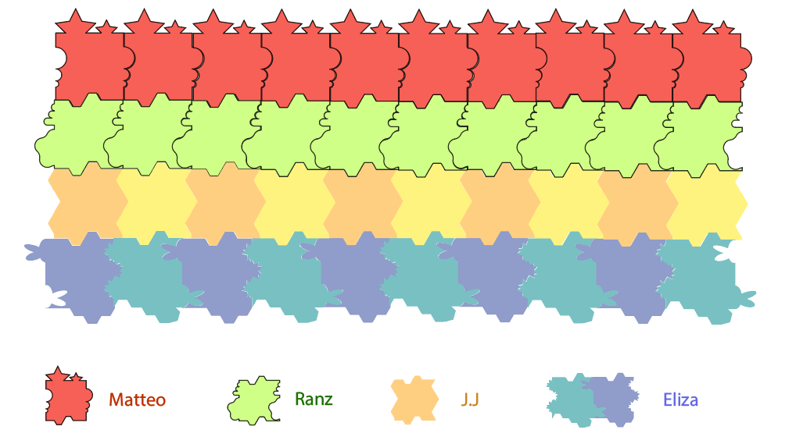
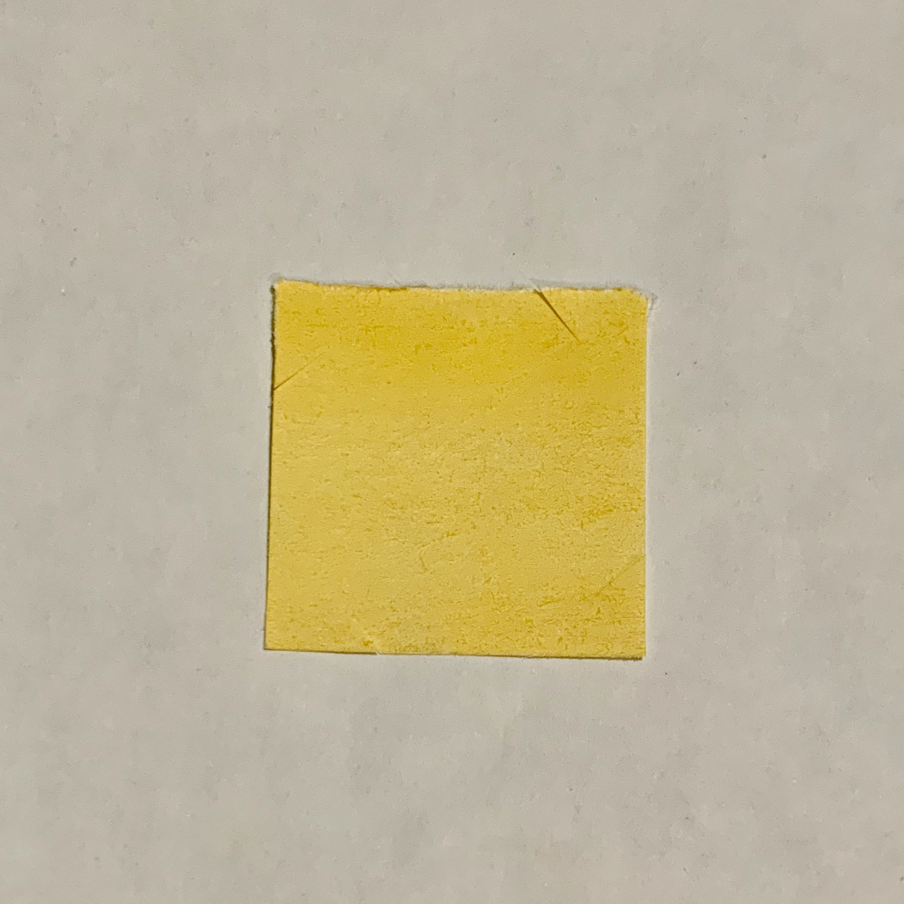
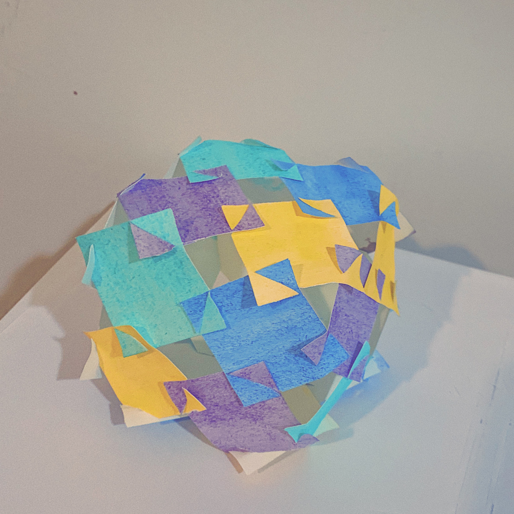
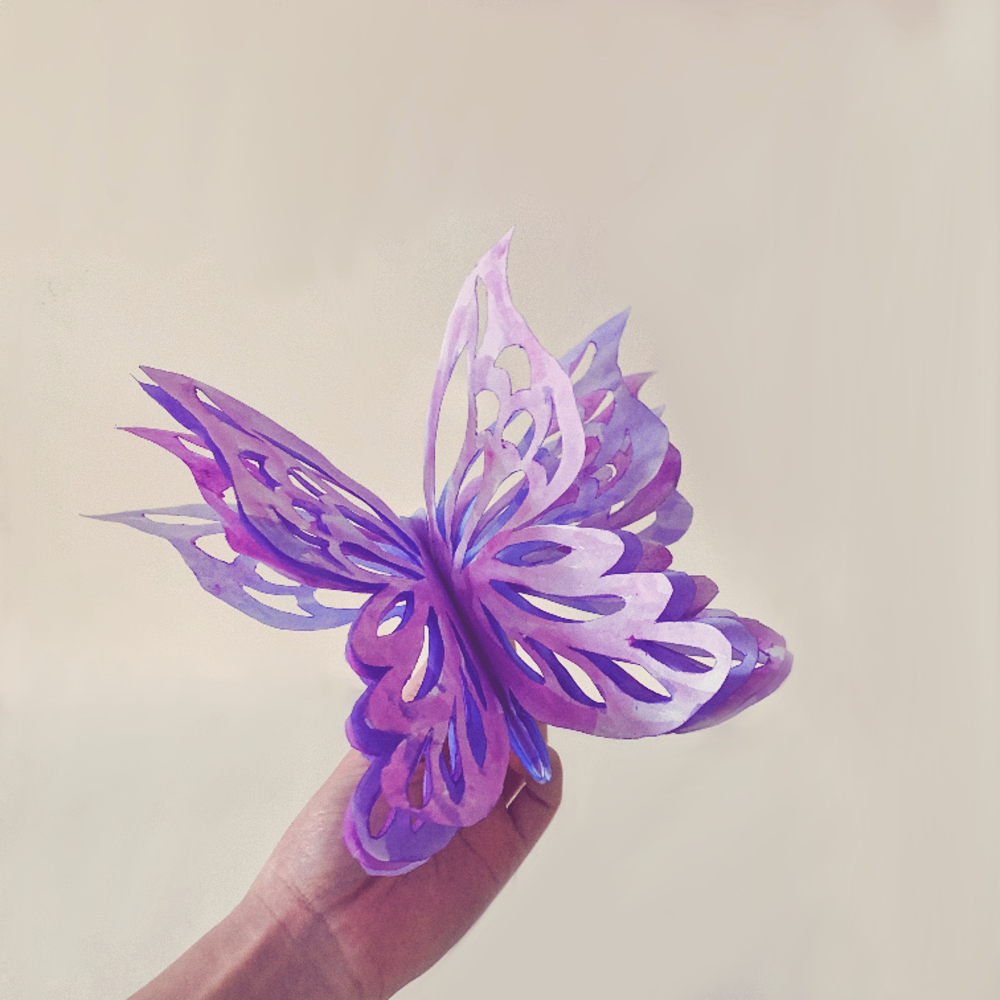
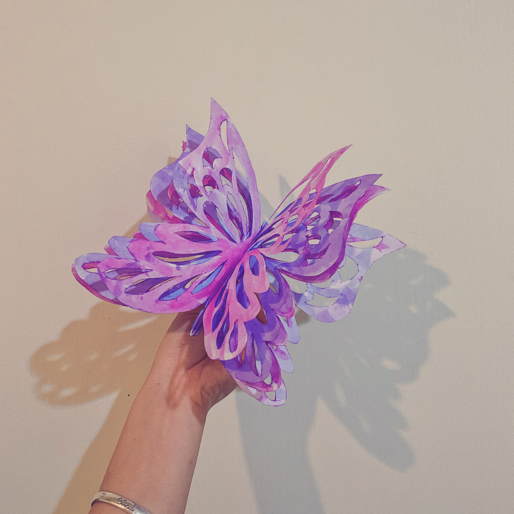

ART 103 AR AS SYSTEM | Eliza
| Oblique Strategies |
Student's Artwork |
Reading |
Mod and Tessle |
Phase 1
Tessellation



Oragami

Group Work
Our artwork on the first presentation.

After some modifications

Kirigami Art
I used colored paper squares of different colors, cut the connecting points in each corner
clockwise with scissors, and then spliced them into a cube with four colors on each side.


Another piece is that I carved many layers of butterflies
and then colored them and stacked them together.

